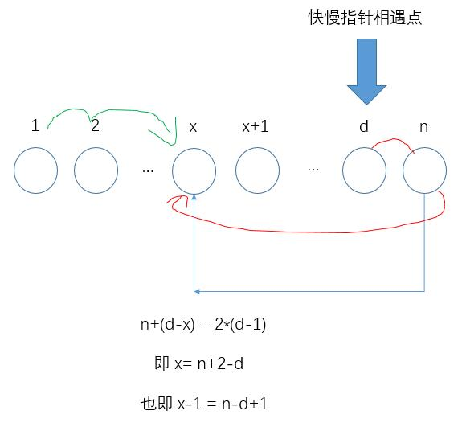

Leetcode 56- 合并区间
1. 题目描述
我反正觉得这两道题的题目描述没说清，先说第141题，简单点：
给定一个链表，判断链表中是否有环。为了表示给定链表中的环，我们使用整数 pos 来表示链表尾连接到链表中的位置（索引从 0 开始）。 如果 pos 是 -1，则在该链表中没有环。
- 示例 1：
输入：head = [3,2,0,-4], pos = 1
输出：true
解释：链表中有一个环，其尾部连接到第二个节点。

- 示例 2：
输入：head = [1,2], pos = 0
输出：true
解释：链表中有一个环，其尾部连接到第一个节点。

- 示例 3：
输入：head = [1], pos = -1
输出：false
解释：链表中没有环。

反正我看了半天也不知道这个pos在代码中用在哪里，函数API要求我们返回一个boolean类型的变量。
2. 思路
我的第一个想法就是采用“查表”的方式，遍历整个链表，每次扫过一个结点，先查一下集合中是否已经有该元素，如果没有，就把它加到集合中去，继续往后扫描；如果集合中已经存在这个结点，那肯定是有环了，这也是最粗暴的办法。
但是可以用快慢指针的方式，快指针每次走2步，慢指针每次走1步，如果没有环，那快指针会很快到底；而如果有环，快慢指针总有一天会相遇，这时候返回true即可。
3. 代码
Java 实现1
2
3
4
5
6
7
8
9
10
11
12
13
14
15
16
17
18
19
20public boolean hasCycle(ListNode head) {
// 只有1个结点或空链表
if(head==null || head.next==null)
return false;
// 快慢指针，如果二者相遇就肯定有环
ListNode fast=head;
ListNode slow=head;
while (fast!=null && fast.next!=null)
{
fast=fast.next.next;
slow=slow.next;
if(fast==slow) // 中间执行过程中
return true;
}
// 如果是因为fast到了底而正常退出，则代表没有环
return false;
}
4. 升级
- 142题: 现在不仅要判断有没有环，如果有，还要判断环的入口点在哪，并返回那个结点。
于是沿着上面的思路，我做了一个简单计算：

上面的式子说明，一旦找到了快慢指针相遇的点，我们再赋值两个结点，让它们一个从链表头开始，另一个从相遇点开始往下走，它们刚好会在环的入口处相遇，此时返回这个结点就可以。这也就是官方题解上的解法。
1 | /** |